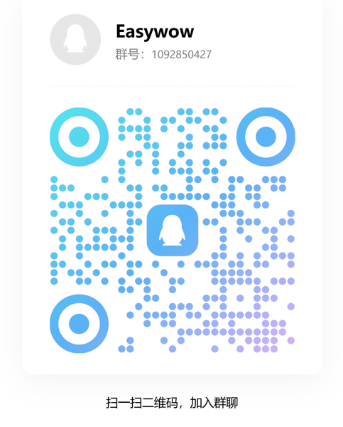

World of Warcraft 智能循环输出助手
⚡ 基于 WoW 公开 API 开发 · 轻量无破解 · 无内存修改每个魔兽玩家都有一颗打 dps 的心，奈何手速跟不上意识 😂
EasyWoW 就是为你准备的——它利用游戏公开 API 智能判断该放什么技能，帮你把注意力解放出来，专心躲技能、走位、干杂活。不破解、不改内存，纯绿色轻量工具。
管你是一键党、多开党、还是单纯想划划水，装上去就能用。
问题反馈、功能建议、循环分享，欢迎加群交流

QQ群：1092850427